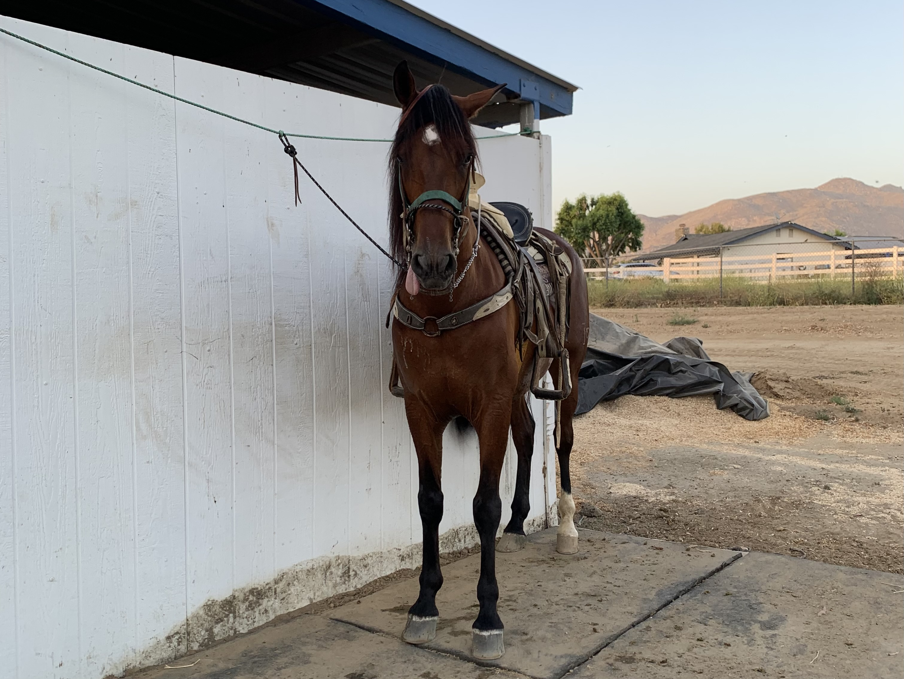
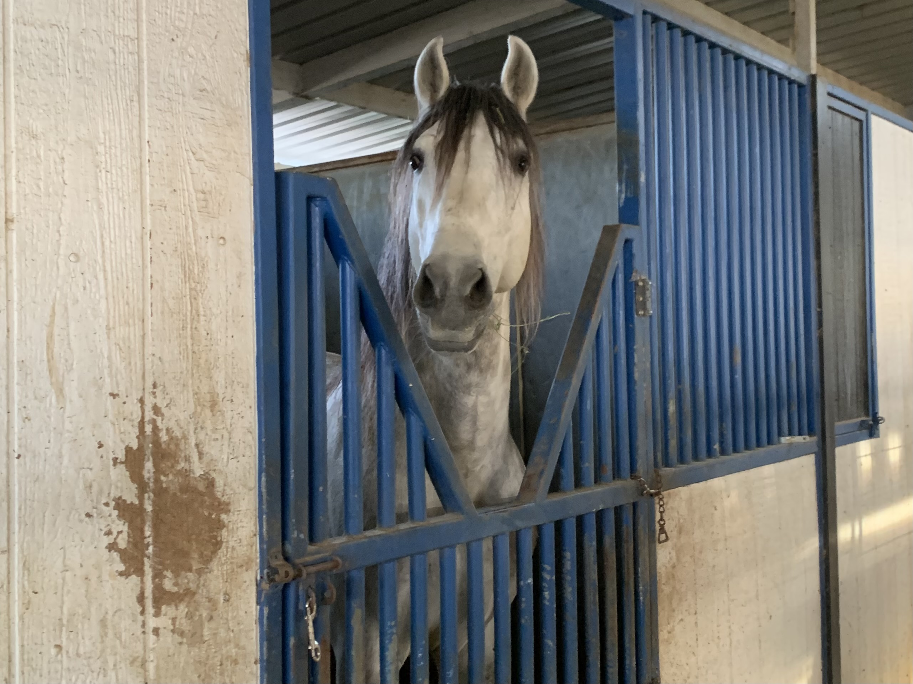
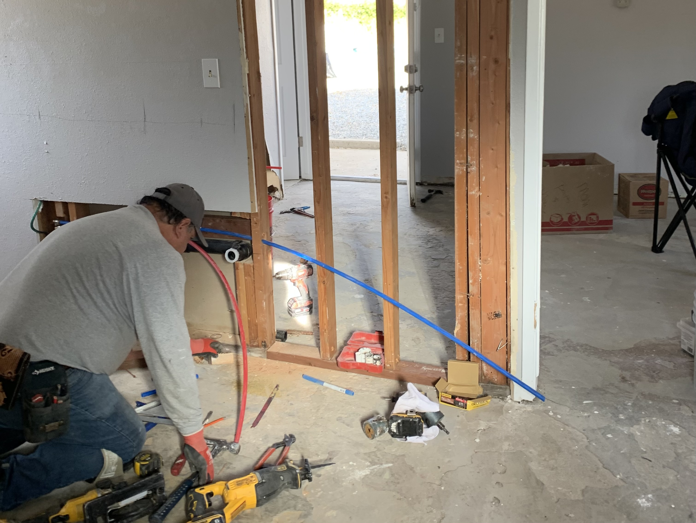
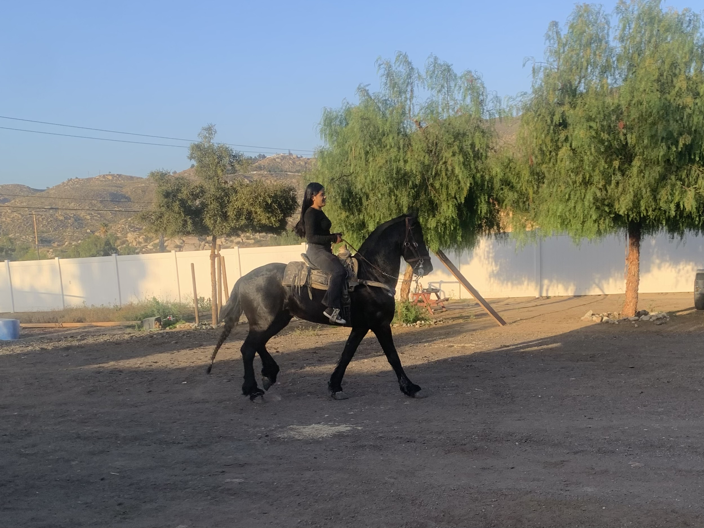
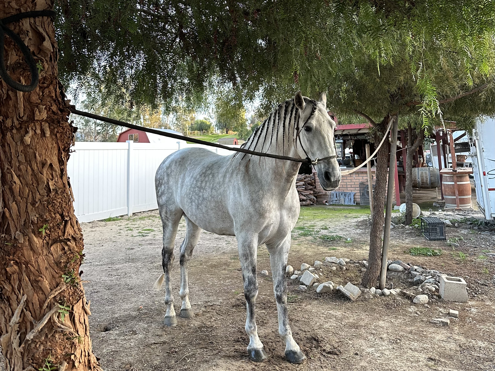
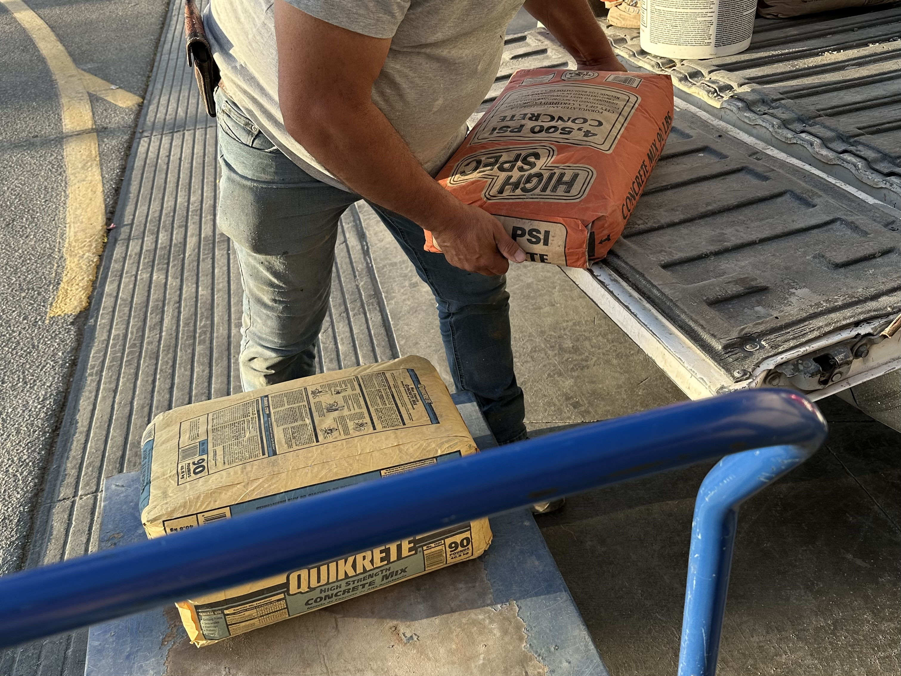

Entering the World of higher education and professional development, I am a first-year undergraduate student at UCR majoring in Business Administration. At 18 years old, I am driven by a dual passion for organizational exellence and human centered leadership. While my professional journey is in its early stages, my background
is defined by a deep commitment to community service, a love for the natural world, and a personality that is suited for nagviagting complex challenges with composure.
My academic focus on business stems from a desire to understand the mechanics of how organizations thrive and how strategic managment can be used to solve real world problems. I approach my studies with the same curiosity and discipline that I apply to my personal life, seeking to build a foundation in economics, marketing, and ethical leadership. I am particulary intrested in how businesses can create a sustainable value while
maintaing a strong sense of social responsibility.
Outside of the classroom, my character has been shaped significantly by extensive volunteer work. In the absence of traditional corporate roles, I have dedicated my time to various community initiatives, which served as my first experinces with leaderhip and teamwork.
Volunteering has allowed me to interact with diverse groups of people, fostering a sense of empathy and global perspective that I carry into my business pursuits.
A defining aspect of my personality is my connection to the outdoors and animals. I find my greatest sense of balance and clarity when I am submerged in nature. Specifically, I have a profound love for horses and enjoy going horseback riding. Working with horses requires a unique blend of physical coordination and emotional strength. It has taught me the importance of understanding others
and the value of building trust through consistency. The patience required to work with such powerful animals has translated directly into my interpersonal skills, making me a more attentive and grounded individual.
I take pride in being a problem-solver. Wether it is a logistical hurdle in a volunteer project or a complex concept in my coursework, I enjoy the process of breaking down a challenge and finding a logical and efficient path forward. I believe that effective problem-solving is not just about technical skill, but also about the mindset one brings to the table.
I am also very patient and understanding, traits that allow me to remain calm under pressure and mediate effectively within a team. I believe that listening is just as important as speaking, and I strive to ensure that those I collaborate with feel heard and respected.
As I look torward the future, I am eager to secure my first profesional opportunities where I can apply my academic knowledge and my soft skills in a fast-paced environment. I am a dedicated, resilient, and forward-thinking student ready to contribute to the evolving landscape of modern business.
• Managed material X
• Assisted with small projects
• Translated documents
• Assisted with daily care and managment of horses
• Maintained facility standards
• Mentored elementry students during workshops
• Assisted Staff
• Ensured student safety and supervision
• Managed stands during events





